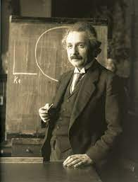

Albert Einstein
E=MC2

- Albert Einstein (14 March 1879 – 18 April 1955) was a German-born theoretical physicist, widely acknowledged to be one of the greatest physicists of all time.
- Einstein is best known for developing the theory of relativity, but he also made important contributions to the development of the theory of quantum mechanics.
- His mass–energy equivalence formula E = mc2, which arises from relativity theory, has been dubbed "the world's most famous equation".
- His intellectual achievements and originality resulted in "Einstein" becoming synonymous with "Genius".
- In 1905, a year sometimes described as his annus mirabilis ('miracle year'), Einstein published four groundbreaking papers.
- These outlined the theory of the photoelectric effect, explained Brownian motion, introduced special relativity, and demonstrated mass-energy equivalence.
- If you have enough time,then visit his wikipedia page by clicking here